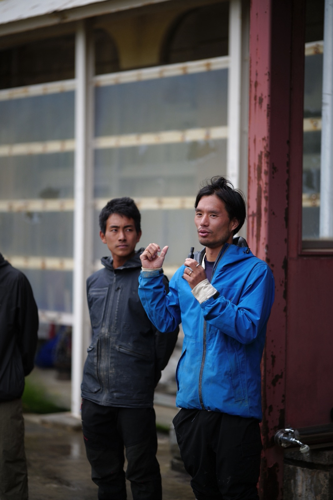
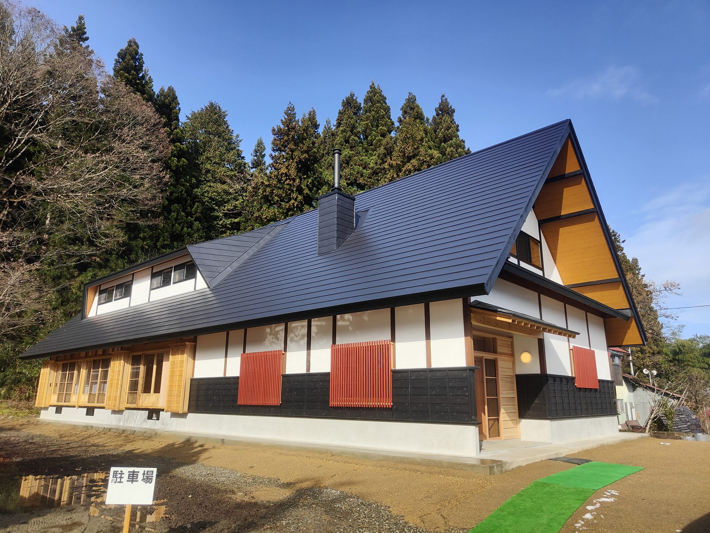

ZEN-BU Inc. is a company based in the Aizu region of Fukushima. It was born out of our own work as farmers, to give shape to the things we could not tackle within the bounds of a farm. Its two leaders, Kōta Uno and Takeo Ōshima, run it while still standing in the fields as working farmers.

The two originally grew rice, soybeans, vegetables, and fruit, and made miso, koji, and pickled plums, at Munokai, a farming corporation in Aizu. Munokai is a farm that values helping others in the region who practice organic and natural farming as much as it values its own income. It has hosted study groups, introduced buyers and collected produce, and even prepared the paperwork for organic JAS certification — all without asking anything in return.
What became clear on the ground was that farming alone cannot sustain itself. Pesticide-free produce grown in a local, circular way is inherently of great value, yet the market fails to convey that value. Producers are consumed by growing and shipping, which leaves little room for telling their story. And as long as we carry the label of "farmer," conversations with those around us end at what, how much, and for how much — we never become partners in a conversation about the very foundations of the society that farming supports. The problems of farming cannot be solved within the farming world alone.
Farming is the industry that supports society at its very base. Looking up from there, you can see clearly how precarious the assumptions beneath today's society are. We believe the next ten to twenty years will be a period of great transition. As the premises of the economy and everyday life shift from global to local, we must build, now, a foundation that can meet the coming era. That is ZEN-BU's role.
By foundation we mean what is absolutely indispensable to living — food, energy, housing, and the environment in which people can grow and keep living: education, health, and care. We are assembling the minimum that lets people say "with this, we can get by," from resources within the region, in as circular a form as possible. But what we aim for is not a life of bare survival. Not an abundance that chases endless expansion, but one that circulates, holds its quality, and carries high energy even at a small scale. That is why, in building our bases, we deliberately use good materials in places that would normally be cut, and do not skimp on investment. Values themselves have to change.
ZEN-BU does not put making money from the business itself first. That is a weakness, and at the same time a strength we do not want to compromise. We want to grow the foundation through the investment and participation of people who share our outlook, and to form, within this period of transition, a gathering of companions who come to the field and build together. That is what ZEN-BU Inc. is.

SHINDO is a project that reconnects with the cycles of nature, questions the way we live now, and opens up new ways of living. ZEN-BU Inc. is the organization that runs it, but SHINDO does not belong to ZEN-BU. This is the premise we hold most dear.
SHINDO is an undertaking carried forward with many people, both in and beyond Aizu. We at ZEN-BU simply happen to be at the center of its operations at this stage — taking the temperature of the room, so to speak. We believe SHINDO as a movement will keep moving forward through the hands of people other than us. In fact, that is exactly what SHINDO aims to become.
So what does ZEN-BU do? If SHINDO is the overall picture of what is being done and what is being attempted, ZEN-BU is the company that builds the scaffolding for that activity to stand on. When people gather and try to make something, they want to build a house but there is no timber, no carpenter. They want to farm but there are no tools and the waterways are not in order. ZEN-BU's business is to eliminate, one by one, every "we can't because we don't have it." Food, energy, housing, education and health — we put in place the foundations indispensable to living, in a form that circulates on local resources.
On that foundation, SHINDO becomes a place where people gather. People in many regions and fields who share similar values, yet within the constraints of their current organizations and industries cannot realize the things they feel really ought to exist. SHINDO is where their networks, abilities, and potential are brought together, and ZEN-BU prepares the ground on which they can be put to use. We sense that Aizu has the soil to release those constraints and give them form.
We have a website for SHINDO, but until now there was none for ZEN-BU itself. We had been explaining SHINDO all along and had hardly ever had occasion to say what ZEN-BU is. SHINDO is an open movement; ZEN-BU is the company that supports it and does the groundwork for the society to come. Neither can exist without the other.
Our main base is Showa Village. The number of people who come every month is growing, but we still lack members who can live here full time. If you would like to change where you work for a while, leave your current job and come here, or come with your family, you are welcome. Please get in touch — as a member of SHINDO, and as a companion in giving shape to the foundation ZEN-BU is building.
Building the foundations of life in Aizu and Oku-Aizu.
A path toward a new kind of abundance.
Published by ZEN-BU Inc.